한국사능력검정시험-심화 (2020-02-08 기출문제)
1. (가) 시대의 생활 모습으로 옳은 것은? [1점]
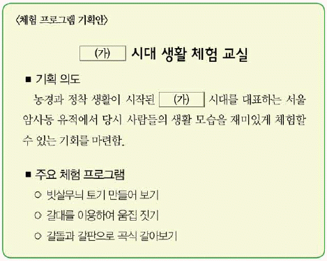
- 돌방무덤에 시신을 매장하였다.
- 가락바퀴를 이용하여 실을 뽑았다.
- 명도전, 반량전 등의 화폐를 사용하였다.
- 쟁기, 쇠스랑 등의 철제 농기구를 사용하였다.
- 거푸집을 이용하여 비파형 동검을 제작하였다.
(정답률: 95%)

2. (가), (나) 나라에 대한 설명으로 옳은 것은? [2점]
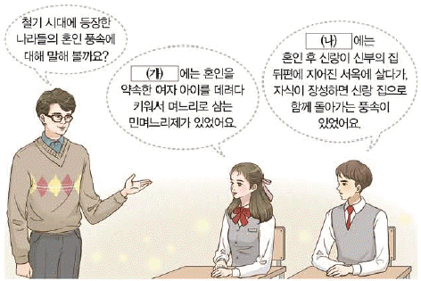
- (가)-여러 가(加)들이 별도로 사출도를 주관하였다.
- (가)-가족의 유골을 한 목곽에 안치하는 풍습이 있었다.
- (나)-읍락 간의 경계를 중시하는 책화가 있었다.
- (나)-철이 많이 생산되어 낙랑과 왜에 수출하였다.
- (가),(나) - 제사장인 천군과 신성 지역인 소도가 있었다.
(정답률: 85%)
3. 다음 자료를 활용한 탐구 활동으로 가장 적절한 것은? [2점]
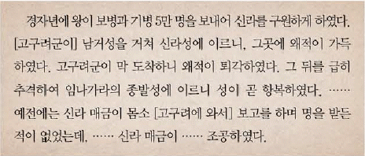
- 백강 전투의 전개 과정을 살펴본다.
- 안동도호부가 설치된 경위를 찾아본다.
- 백제가 사비로 천도한 원인을 알아본다.
- 나당 연합군이 결성된 계기를 파악한다.
- 가야 연맹의 중심지가 이동한 배경을 조사한다.
(정답률: 79%)
4. (가)왕에 대한 설명으로 옳은 것은? [2점]
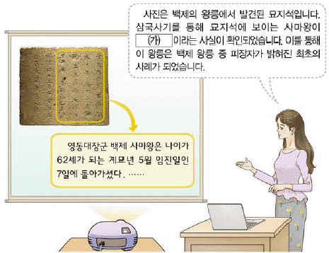
- 금마저에 미륵사를 창건하였다.
- 윤충을 보내 대야성을 함락하였다.
- 지방에 22담로를 두어 왕족을 파견하였다.
- 고흥으로 하여금 서기를 편찬하게 하였다.
- 동진에서 온 마라난타를 통해 불교를 수용하였다.
(정답률: 86%)
5. 다음 자료에 나타난 시기에 볼 수 있는 모습으로 적절한 것은? [2점]
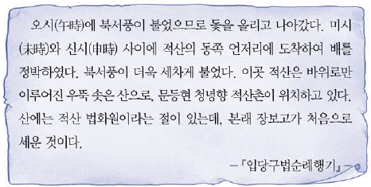
- 농상집요를 소개하는 관리
- 만권당에서 대담을 나누는 학자
- 매소성 전투에서 당군과 싸우는 군인
- 빈공과를 준비하는 6두품 출신 유학생
- 주류성에서 백제 부흥 운동을 벌이는 귀족
(정답률: 79%)
6. 다음 사실이 있었던 시기를 연표에서 옳게 고른 것은? [2점]
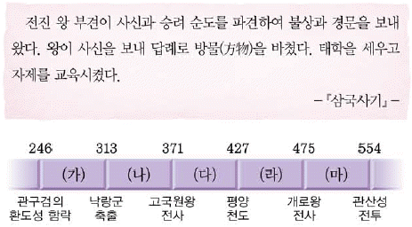
- (가)
- (나)
- (다)
- (라)
- (마)
(정답률: 75%)
7. 다음 정책을 추진한 왕의 재위 기간에 있었던 사실로 옳은 것은? [2점]
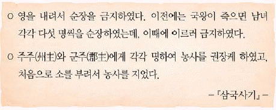
- 병부와 상대등이 설치되었다.
- 이사부가 우산국을 복속시켰다.
- 불국사 삼층 석탑이 건립되었다.
- 화랑도가 국가적인 조직으로 개편되었다.
- 지방관 감찰을 목적으로 외사정이 파견되었다.
(정답률: 73%)
8. (가)에 들어갈 내용으로 옳은 것은? [2점]
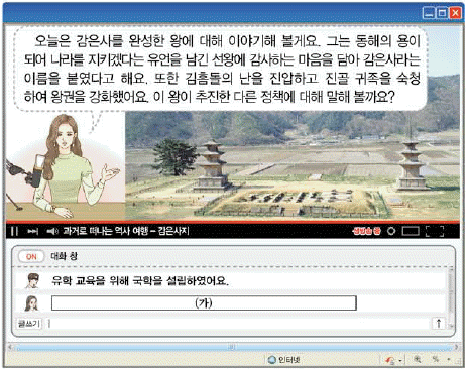
- 백성에게 정전을 지급하였어요.
- 건원이라는 독자적인 연호를 사용하였어요.
- 독서삼품과를 실시하여 관리를 채용하였어요.
- 지방 행정 제도를 9주 5소경으로 정비하였어요.
- 시장을 감독하는 관청인 동시전을 설치하였어요.
(정답률: 77%)
9. (가) 국가에 대한 설명으로 옳지 않은 것은? [1점]
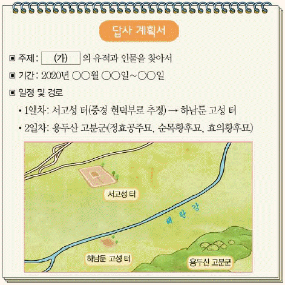
- 중앙군으로 9서당을 편성하였다.
- 중정대를 두어 관리를 감찰하였다.
- 전성기에 해동성국이라고도 불렸다.
- 인안, 대흥 등의 연호를 사용하였다.
- 5경 15부 62주의 지방 행정 제도를 마련하였다.
(정답률: 73%)
10. (가)에 들어갈 문화유산으로 옳은 것은? [3점]
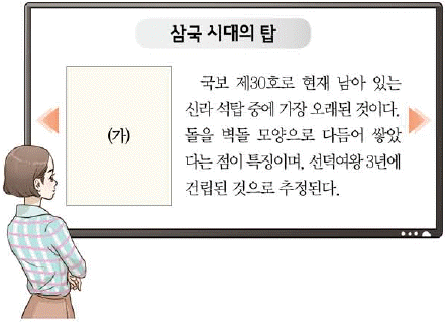
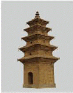
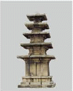
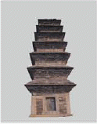
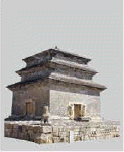
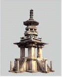
(정답률: 62%)
11. (가)~(라)를 일어난 순서대로 옳게 나열한 것은? [3점]
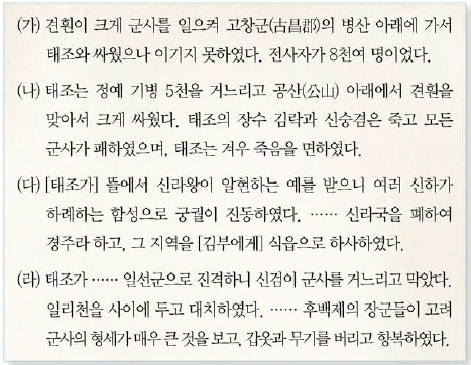
- (가)-(나)-(다)-(라)
- (가)-(나)-(라)-(다)
- (나)-(가)-(다)-(라)
- (나)-(가)-(라)-(다)
- (다)-(가)-(나)-(라)
(정답률: 60%)
12. 다음 장면에 등장하는 왕이 추진한 정책으로 옳은 것은? [2점]
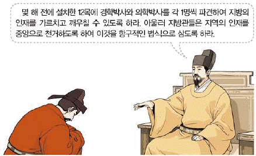
- 지방 세력 통제를 위해 향리제를 정비하였다.
- 주전도감을 설치하여 해동통보를 발행하였다.
- 쌍기의 건의를 받아들여 과거제를 실시하였다.
- 정계와 계백료서를 지어 관리의 규범을 제시하였다.
- 국자감을 성균관으로 개칭하고 유학 교육을 강화하였다.
(정답률: 49%)
13. (가) 국가에 대한 고려의 대응으로 옳은 것은? [2점]
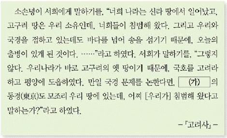
- 별무반을 보내 동북9성을 축조하였다.
- 개경에 나성을 쌓아 침입에 대비하였다.
- 최영을 중심으로 요동 정벌을 추진하였다.
- 화통도감을 설치하여 화약과 화포를 제작하였다.
- 쌍성총관부를 공격하여 철령 이북의 땅을 수복하였다.
(정답률: 72%)
14. (가)에 들어갈 내용으로 적절한 것은? [2점]
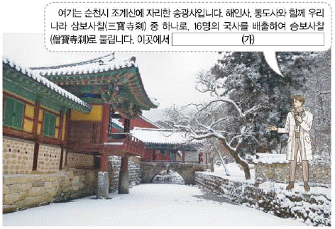
- 일연이 삼국유사를 집필하였습니다.
- 원효가 금강삼매경론을 저술하였습니다.
- 의천이 신편제종교장총록을 편찬하였습니다.
- 지눌이 정혜쌍수와 돈오점수를 내세웠습니다.
- 요세가 법화 신앙을 바탕으로 백련 결사를 이끌었습니다.
(정답률: 61%)
15. (가), (나) 사이의 시기에 있었던 사실로 옳은 것은? [2점]
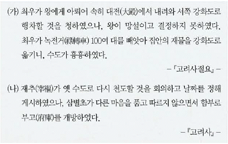
- 인사 행정을 담당하던 정방이 폐지되었다.
- 만적이 개경에서 신분 해방을 도모하였다.
- 묘청이 중심이 되어 서경 천도를 주장하였다.
- 정중부 등이 정변을 일으켜 권력을 장악하였다.
- 외적의 침입을 받아 황룡사 구층 목탑이 소실되었다.
(정답률: 56%)
16. 다음 자료에 나타난 시기의 사실로 옳은 것은? [1점]
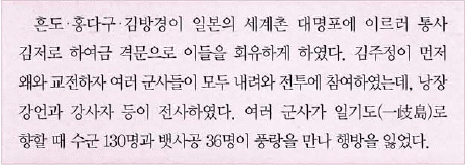
- 왕조 교체를 예언하는 정감록이 유포되었다.
- 지배층을 중심으로 변발과 호복이 확산되었다.
- 교정도감이 국정을 총괄하는 기구로 부상하였다.
- 이자겸이 왕실의 외척이 되어 권력을 독점하였다.
- 김사미와 효심이 가혹한 수탈에 저항하여 봉기하였다.
(정답률: 47%)
17. 다음 지역에서 있었던 사실로 옳은 것은? [3점]
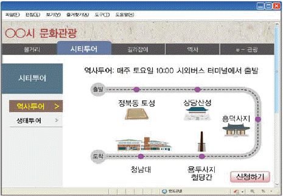
- 유형원이 반계수록을 저술하였다.
- 안승을 왕으로 하는 보덕국이 세워졌다.
- 금속 활자로 직지심체요절이 간행되었다.
- 백제와 신라 사이에 황산벌 전투가 벌어졌다.
- 전태일이 근로 기준법 준수를 외치며 분신하였다.
(정답률: 60%)
18. 다음 자료에 나타난 시기의 사회 모습으로 옳은 것은? [2점]
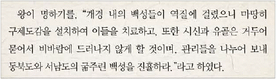
- 을파소의 건의로 진대법이 실시되었다.
- 기근에 대비하기 위해 구황촬요가 발간되었다.
- 우리 풍토에 맞는 농법을 소개한 농사직설이 편찬되었다.
- 국산 약재와 치료 방법을 정리한 향약집성방이 간행되었다.
- 기금을 모아 그 이자로 빈민을 도와주는 제위보가 운영되었다.
(정답률: 65%)
19. 밑줄 그은 ‘이 왕’의 재위 기간에 있었던 사실로 옳은 것은? [2점]
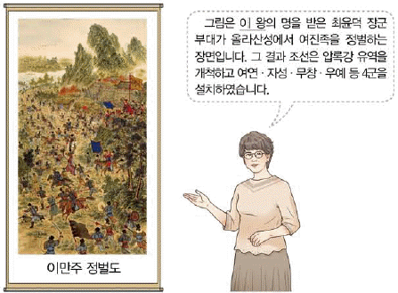
- 어영청을 중심으로 북벌이 추진되었다.
- 국왕의 친위 부대인 장용영이 설치되었다.
- 강홍립 부대가 사르후 전투에 참전하였다.
- 에도 막부의 요청에 따라 통신사가 파견되었다.
- 제한된 범위의 무역을 허용한 계해약조가 체결되었다.
(정답률: 62%)
20. (가) 기구에 대한 설명으로 옳은 것은? [1점]
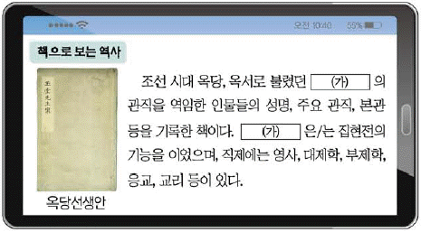
- 수도의 행정과 치안을 담당하였다.
- 사헌부, 사간원과 함께 3사로 불렸다.
- 검서관에 서얼 출신 학자들이 기용되었다.
- 임진왜란을 거치면서 국정 전반을 총괄하였다.
- 국왕 직속 사법 기구로 반역죄, 강상죄 등을 처결하였다.
(정답률: 70%)
21. 밑줄 그은 ‘왕’에 대한 설명으로 옳은 것은? [3점]
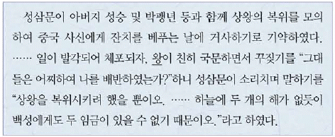
- 유자광의 고변을 계기로 남이를 처형하였다.
- 변급, 신류 등을 파견하여 나선 정벌을 단행하였다.
- 함길도 토착 세력이 일으킨 이시애의 난을 진압하였다.
- 인목 대비 유폐와 영창 대군 사사를 명분으로 폐위되었다.
- 유능한 인재를 양성하기 위해 초계문신제를 시행하였다.
(정답률: 46%)
22. (가) 종교에 대한 설명으로 옳은 것은? [2점]
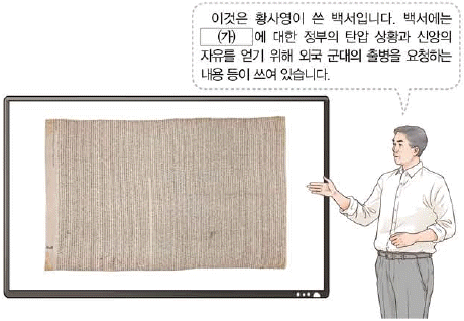
- 개벽, 신여성 등의 잡지를 발행하였다.
- 하늘에 제사 지내는 초제를 거행하였다.
- 동경대전과 용담유사를 경전으로 삼았다.
- 박중빈을 중심으로 새생활 운동을 추진하였다.
- 만주에서 의민단을 조직하여 독립 전쟁을 전개하였다.
(정답률: 31%)
23. 다음 사건을 계기로 일어난 사실로 옳은 것은? [2점]
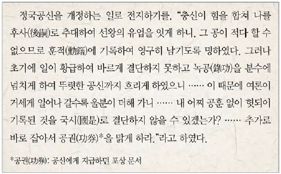
- 정여립 모반 사건으로 기축옥사가 일어났다.
- 남곤 등의 고변으로 조광조 일파가 축출되었다.
- 양재역 벽서 사건으로 이언적 등이 화를 입었다.
- 조의제문이 발단이 되어 김일손 등이 처형되었다.
- 공신 책봉에 불만을 품고 이괄이 반란을 일으켰다.
(정답률: 54%)
24. 밑줄 그은 ‘시기’에 볼 수 있는 모습으로 적절한 것은? [2점]
- 제중원에서 치료받는 환자
- 도병마사에서 회의하는 관리
- 곤여만국전도를 열람하는 학자
- 당백전을 주조하는 관청 소속 장인
- 벽란도에서 교역하는 아라비아 상인
(정답률: 44%)
25. (가) 제도에 대한 설명으로 옳은 것은? [1점]
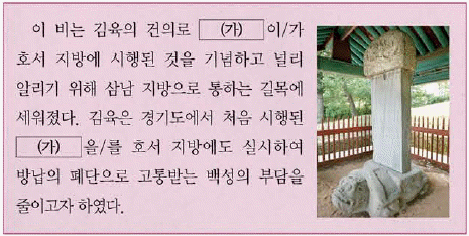
- 양반에게도 군포를 부과하였다.
- 토지 소유자에게 결작을 거두었다.
- 풍흉에 따라 전세를 9등급으로 차등 과세하였다.
- 관청에 물품을 조달하는 공인이 등장하는 배경이 되었다.
- 부족한 재정을 보충하기 위해 선무군관포를 징수하였다.
(정답률: 66%)
26. (가) 왕의 재위 기간에 있었던 사실로 옳은 것은? [3점]
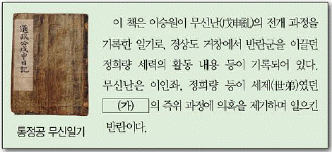
- 허적과 윤휴 등 남인들이 대거 축출되었다.
- 박규수의 건의로 삼정이정청이 설치되었다.
- 자의 대비의 복상 문제로 예송이 전개되었다.
- 붕당의 폐해를 경계하기 위한 탕평비가 건립되었다.
- 왕조의 통치 규범을 재정비한 대전통편이 편찬되었다.
(정답률: 42%)
27. 다음 대화가 이루어진 시기의 경제 상황으로 옳지 않은 것은? [2점]
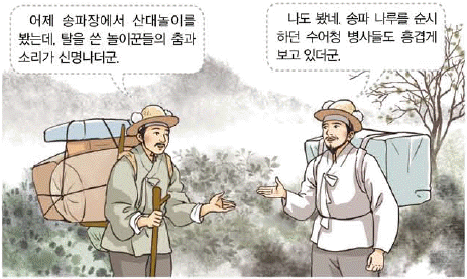
- 담배, 면화 등이 상품 작물로 재배되었다.
- 경기 지역에 한하여 과전법이 실시되었다.
- 국경 지대에서 개시 무역과 후시 무역이 이루어 졌다.
- 모내기법의 확산으로 벼와 보리의 이모작이 성행하였다.
- 설점수세제의 시행으로 민간의 광산 개발이 활기를 띠었다.
(정답률: 73%)
28. 다음 교서가 발표된 전쟁 기간에 있었던 사실로 옳은 것은? [3점]
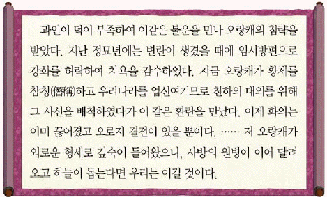
- 김상용이 강화도에서 순절하였다.
- 정문부가 길주에서 의병을 이끌었다.
- 조명 연합군이 평양성을 탈환하였다.
- 정봉수와 이립이 용골산성에서 항전하였다.
- 포수, 사수, 살수로 구성된 훈련도감이 설치되었다.
(정답률: 32%)
29. 다음 뉴스에서 보도하는 사건에 대한 설명으로 옳은 것은? [2점]
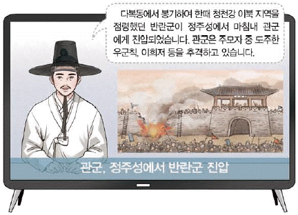
- 척왜양창의를 기치로 내걸었다.
- 몰락 양반 유계춘이 주도하였다.
- 청군이 파병되는 결과를 가져왔다.
- 남접과 북접이 연합하여 전개되었다.
- 서북인에 대한 차별에 반발하여 일어났다.
(정답률: 60%)
30. 다음 검색창에 들어갈 교육 기관에 대한 설명으로 옳은 것은? [1점]
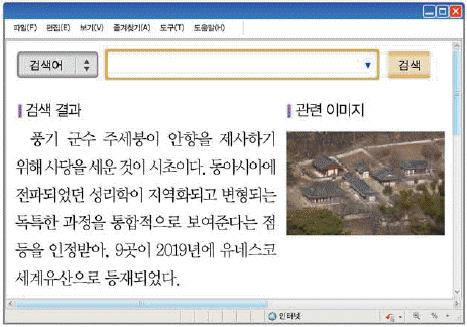
- 전국의 부ㆍ목ㆍ군ㆍ현에 하나씩 설립되었다.
- 입학 자격은 생원, 진사를 원칙으로 하였다.
- 중앙에서 교관인 교수나 훈도가 파견되었다.
- 유학을 비롯하여 율학, 서학, 산학을 교육하였다.
- 국왕으로부터 편액과 함께 서적 등을 받기도 하였다.
(정답률: 54%)
31. 다음 서신이 교환된 이후에 전개된 사실로 옳은 것은? [2점]
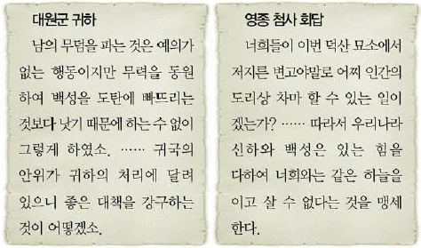
- 어재연 부대가 광성보에서 항전하였다.
- 외규장각의 의궤가 국외로 약탈되었다.
- 평양 관민이 제너럴 셔먼호를 불태웠다.
- 로즈 제독의 함대가 양화진을 침입하였다.
- 양헌수 부대가 정족산성에서 프랑스군을 격퇴하였다.
(정답률: 63%)
32. 다음 자료에 나타난 사건에 대한 설명으로 옳은 것은? [3점]
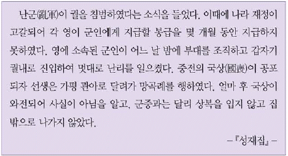
- 통감부의 방해와 탄압으로 실패하였다.
- 통리기무아문이 설치되는 배경이 되었다.
- 홍범 14조를 개혁의 기본 방향으로 제시하였다.
- 일본 공사관에 경비병이 주둔하는 계기가 되었다.
- 김기수가 수신사로 일본에 파견되는 결과를 가져왔다.
(정답률: 72%)
33. (가) 단체에 대한 설명으로 옳은 것은? [3점]
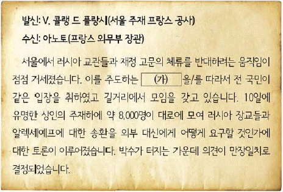
- 만세보를 발행하여 민증 계몽에 힘썼다.
- 일본의 황무지 개간권 요구를 저지하였다.
- 중추원 개편을 통한 의회 설립을 추진하였다.
- 독립운동 자금 마련을 위해 독립 공채를 발행하였다.
- 대성 학교와 오산 학교를 설립하여 인재를 양성하였다.
(정답률: 47%)
34. 밑줄 그은 ‘내각’에서 추진한 정책으로 옳은 것은? [2점]
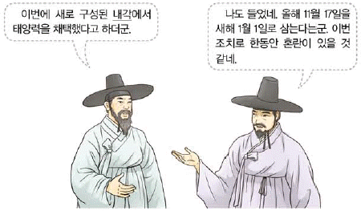
- 건양이라는 연호를 제정하였다.
- 전국 8도를 23부로 개편하였다.
- 황제 직속의 원수부를 설치하였다.
- 박문국을 설치하여 한성순보를 발행하였다.
- 공사 노비법을 혁파하고 과거제를 폐지하였다.
(정답률: 58%)
35. (가) 지역에서 전개된 민족 운동에 대한 설명으로 옳은 것은? [2점]
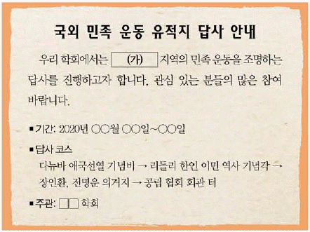
- 신흥 강습소를 세워 독립군을 양성하였다.
- 해조신문을 발간하여 국권 회복에 힘썼다.
- 서전서숙을 설립하여 민족 교육을 실시하였다.
- 대한인 국민회를 중심으로 외교 활동을 펼쳤다.
- 조선 독립 동맹을 결성하여 대일 항전을 준비하였다.
(정답률: 50%)
36. 다음 사건이 일어난 이후의 사실로 옳은 것을 보기에서 고른 것은? [2점]
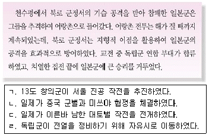
- ㄱ, ㄴ
- ㄱ, ㄷ
- ㄴ, ㄷ
- ㄴ, ㄹ
- ㄷ, ㄹ
(정답률: 57%)
37. (가) 단체에 대한 설명으로 옳은 것은? [2점]
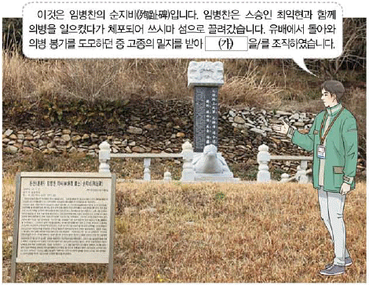
- 정우회 선언의 영향으로 결성되었다.
- 일제가 꾸며낸 1⑤인 사건으로 해체되었다.
- 일제가 치안 유지법을 적용하여 탄압하였다.
- 백산 상회를 통해 독립운동 자금을 마련하였다.
- 국권 반환 요구서를 조선 총독에게 제출할 것을 계획하였다.
(정답률: 63%)
38. 다음 학생들이 발표하고 있는 인물에 대한 설명으로 옳은 것은? [1점]
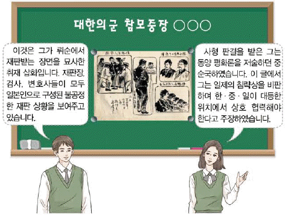
- 동양 척식 주식회사에 폭탄을 투척하였다.
- 하얼빈 역에서 이토 히로부미를 사살하였다.
- 한인 애국단을 결성하여 의거 활동을 전개하였다.
- 조선 혁명 간부 학교를 세워 독립군을 양성하였다.
- 명동 성당 앞에서 이완용을 습격하여 증상을 입혔다.
(정답률: 71%)
39. (가) 운동에 대한 설명으로 옳은 것은? [1점]
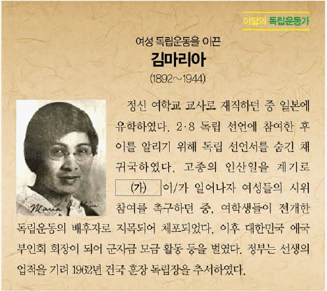
- 조선 혁명 선언을 활동 지침으로 삼았다.
- 신간회에서 진상 조사단을 파견하여 지원하였다.
- 박상진이 주도한 대한 광복회 결성에 영향을 주었다.
- 전개 과정에서 일제가 제암리 학살 등을 자행하였다.
- 대한매일신보의 후원을 받아 전국적으로 확산되었다.
(정답률: 64%)
40. (가)~(마)에 들어갈 내용으로 옳은 것은? [2점]
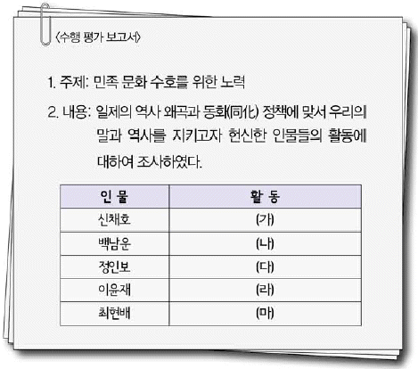
- (가)-잡지 한글의 간행을 주도하였다.
- (나)-한글 맞춤법 동일안 제정에 참여하였다.
- (다)-민족의 얼을 강조하고 조선학 운동을 추진하였다.
- (라)-애국심 고취를 위해 을지문덕전을 집필하였다.
- (마)-조선사회경제사에서 식민 사학의 정체성론을 반박하였다.
(정답률: 57%)
41. 다음 공보가 발표된 이후 대한민국 임시 정부의 활동으로 옳은 것은? [2점]
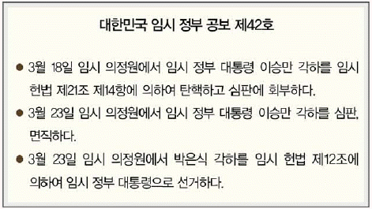
- 삼균주의에 바탕을 둔 건국 강령을 발표하였다.
- 무장 투쟁을 위해 육군 주만 참의부를 조직하였다.
- 독립군 비행사 양성을 위해 한인 비행 학교를 설립하였다.
- 국민 대표 회의를 개최하여 독립 운동의 방향을 논의하였다.
- 파리 강화 회의에 대표단을 파견하여 외교 활동을 전개하였다.
(정답률: 50%)
42. 다음 자료에 나타난 민족 운동에 대한 설명으로 옳은 것을 보기에서 고른 것은? [1점]
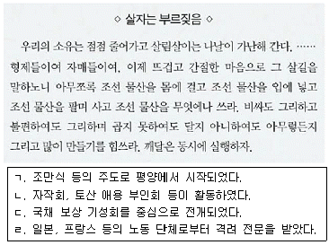
- ㄱ, ㄴ
- ㄱ, ㄷ
- ㄴ, ㄷ
- ㄴ, ㄹ
- ㄷ, ㄹ
(정답률: 63%)
43. (가)법령이 적용된 시기 일제의 정책으로 옳은 것은? [2점]
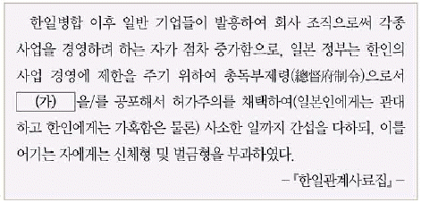
- 제2차 조선 교육령을 시행하였다.
- 범죄 즉결례에 의해 한국인을 처벌하였다.
- 조선 사상범 예방 구금령을 통해 독립운동을 탄압하였다.
- 농민의 자력갱생을 내세운 농촌 진흥 운동을 실시하였다.
- 국가 총동원법을 제정하여 인력과 물자를 강제 동원하였다.
(정답률: 60%)
44. 밑줄 그은 ‘이 운동’에 대한 설명으로 옳은 것은? [1점]
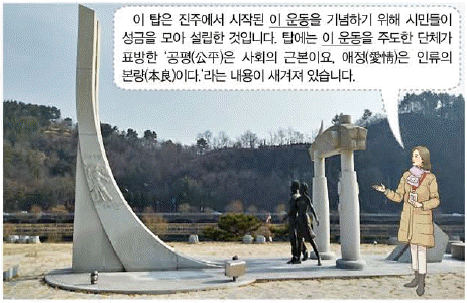
- 잡지 동광을 발행하였다.
- 김광제 등의 발의로 시작되었다.
- 한일 학생 간의 충돌에서 비롯되었다.
- 백정에 대한 차별 철폐를 목표로 하였다.
- 배우자 가르치자 다함께 브나로드를 구호로 내세웠다.
(정답률: 64%)
45. (가) 군사 조직에 대한 설명으로 옳은 것은? [2점]
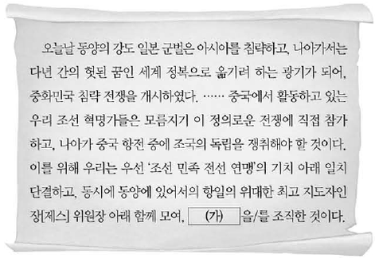
- 영릉가 전투에서 일본군에게 승리하였다.
- 미군과 연계하여 국내 진공 작전을 계획하였다.
- 동북 항일 연군으로 개편되어 유격전을 펼쳤다.
- 쌍성보에서 중국 호로군과 연합 작전을 전개하였다.
- 중국 관내(關內)에서 결성된 최초의 한인 무장 부대였다.
(정답률: 56%)
46. 밑줄 그은 ‘헌법’이 적용된 시기에 있었던 사실로 옳은 것은? [3점]
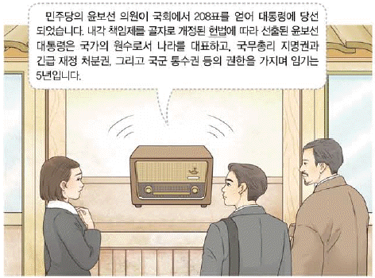
- 반민족 행위 처벌법이 제정되었다.
- 통일 주체 국민 회의가 조직되었다.
- 2년 임기의 국회의원이 선출되었다.
- 조봉암을 중심으로 진보당이 창당되었다.
- 국회가 민의원, 참의원의 양원으로 운영되었다.
(정답률: 51%)
47. 다음 결의문이 채택된 시기를 연표에서 옳게 고른 것은? [2점]
- (가)
- (나)
- (다)
- (라)
- (마)
(정답률: 52%)
48. (가) 민주화 운동에 대한 설명으로 옳은 것은? [2점]
- 유신 체제가 붕괴되는 배경이 되었다.
- 시민군을 조직하여 계엄군에 대항하였다.
- 허정 과도 정부가 구성되는 결과를 가져왔다.
- 관련 기록물이 유네스코 세계 기록 유산으로 등재되었다.
- 대통령 하야를 요구하는 대학 교수단의 시위 행진이 있었다.
(정답률: 49%)
49. 밑줄 그은 ‘선거’가 실시된 배경으로 가장 적절한 것은? [2점]
- 3당 합당으로 민주 자유당이 창당되었다.
- 국제 통화 기금(IMF)의 구제 금융을 금융을 받게 되었다.
- 비상 계엄이 선포된 가운데 발췌 개헌안이 통과되었다.
- 여당 부통령 후보 당선을 위한 3ㆍ15 부정 선거가 자행되었다.
- 호헌 철폐 등을 내세운 시위로 6ㆍ29 민주화 선언이 발표되었다.
(정답률: 67%)
50. 다음 행사를 마련한 정부의 통일 노력으로 옳은 것은? [3점]
- 10ㆍ4 남북 공동 선언을 채택하였다.
- 남북한이 한반도 비핵화 공동 선언에 서명하였다.
- 남북 조절 위원회를 설치하여 통일 방안을 논의하였다.
- 남북한의 교류 협력을 위한 개성 공업 지구 건설에 합의하였다.
- 최초의 이산가족 고향 방문과 예술 공연단 교환을 실현하였다.
(정답률: 47%)